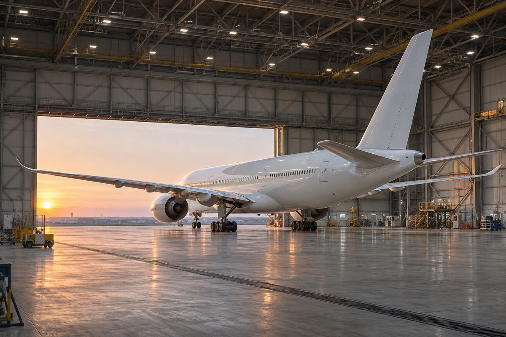

항공 / EXPLAINED
에어버스 A350 초장거리형, 2만3155km 시험비행으로 거리 기록
멜버른에서 툴루즈까지 24시간 24분 비행했다. 7월 시험 결과를 11월에 발표했으며 콴타스의 여객 운항은 2027년 계획이다.

에어버스는 A350-1000ULR이 민간 여객기 최장 비행 거리 부문에서 기네스 세계 기록을 세웠다고 현지시간 11월 9일 발표했다. 실제 비행은 7월 27~28일이었다. 시험기는 멜버른을 출발해 태평양과 북미, 대서양을 거쳐 프랑스 툴루즈까지 1만2503해리, 약 2만3155km를 비행했다. 에어버스가 밝힌 비행시간은 24시간 24분이다. 회사는 국제항공연맹과 항공편 추적 서비스 플라이트레이더24가 기록의 근거가 된 비행 데이터를 독립적으로 검증했다고 밝혔다.
A350은 에어버스의 두 엔진 광동체 항공기 계열이다. 광동체는 객실이 넓어 통로를 두 줄 두는 형태를 말한다. ULR은 초장거리라는 뜻으로, 이번 모델은 콴타스가 시드니에서 런던과 뉴욕을 논스톱으로 잇기 위해 추진하는 프로젝트 선라이즈에 맞춰 개발됐다. 표준 A350-1000을 바탕으로 후방 중앙 연료 탱크를 기체 구조에 통합했다. 에어버스가 설명한 항속거리 증가분은 약 1000해리다. 이 값은 개조로 늘어난 성능을 가리키고, 1만2503해리는 특정 시험에서 실제로 비행한 거리다.
시험이 확인한 범위
시험 목적에는 출발지에서 밀어내기를 시작한 시점부터 도착지에서 바퀴 고임목을 설치할 때까지 23시간이 걸리는 운항을 모사하는 과제가 포함됐다. 이 구간 전체를 블록 타임이라고 한다. 공항에서 지상 이동하는 시간까지 담는 기준이다. 발표문에 나온 24시간 24분은 기록 비행의 비행시간으로 제시됐다. 두 수치가 측정하는 구간이 다르므로 단순히 빼서 시험 목표 초과분을 구하는 데 쓰기 어렵다.
탑승 인원은 시험 조종사와 엔지니어 등을 포함해 13명이었다. 콴타스가 계획하는 시드니발 런던·뉴욕 여객 노선은 에어버스 설명으로 약 1만 해리, 최대 22시간 수준이다. 상업 운항에서는 여행객과 수하물, 화물의 무게를 반영하고 실제 바람과 우회 공항, 연료 여유를 고려해 매일 비행계획을 짠다. 따라서 한 차례의 시험에서 달성한 거리를 표를 사는 승객의 예정 비행거리나 운항시간으로 옮겨 쓰면 여행 계획에 맞지 않는다.
기록에 사용한 경로도 항속거리 비교의 일부다. 시험기는 멜버른을 떠난 뒤 시드니 상공을 지나 북동쪽으로 태평양을 건넜다. 이어 북미 대륙과 대서양을 횡단하고 런던 상공을 지나 툴루즈로 향했다. 발표에 적힌 거리는 이렇게 실제로 선택한 경로를 따라 집계한 값이다. 지도에서 두 공항을 최단 경로로 연결해 잰 거리와는 기준이 다르다. 해리는 항공과 해상에서 쓰는 거리 단위로 1해리는 1.852km다. 같은 수치를 다른 단위로 읽을 때는 반올림 자리 때문에 몇 km 차이가 날 수 있다.
콴타스는 이 초장거리형을 12대 주문했다. 에어버스가 11월 9일 제시한 일정은 첫 기체를 2027년 4월 인도하고 같은 해 후반 시드니–런던 노선에 투입하는 것이다. 이 발표에는 첫 운항의 날짜와 운임이 제시되지 않았다. 기록이 여행자에게 의미를 갖는 지점은 환승을 건너뛸 수 있는 노선의 기술적 가능성이 한 단계 더 구체화됐다는 데 있다. 실제 소요시간과 객실 선택, 예약 가능 날짜는 항공사가 시간표와 판매 조건을 공개할 때 확인할 수 있다.